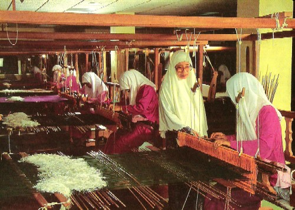
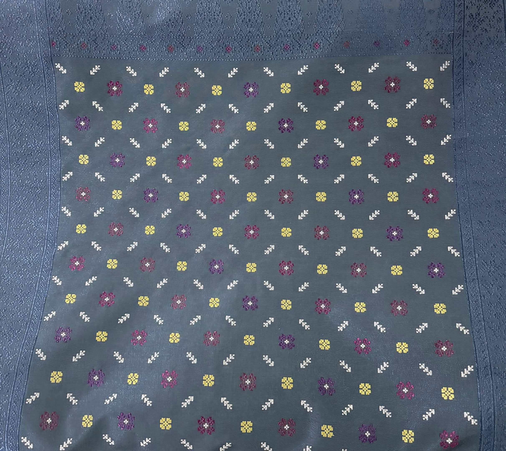
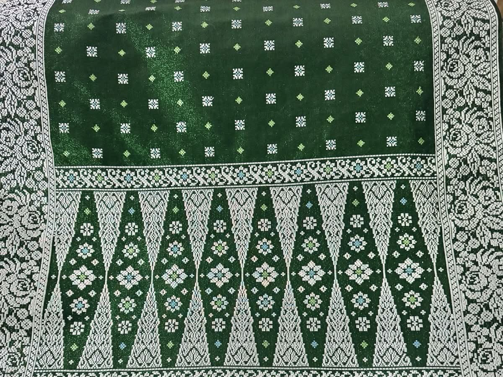
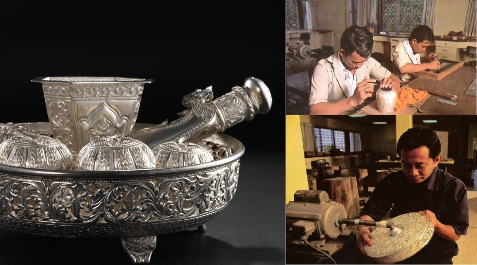
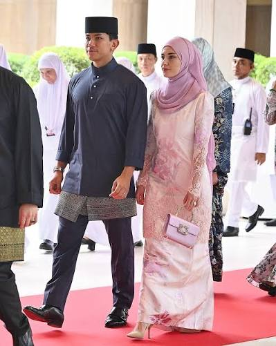

Arts and Crafts
Traditional Songket Weaving

Songket is a traditional woven fabrics with beautiful design that the industry been carried out for many centuries. Some even can be seen anywhere in the world.
An Example of The Fabric That Have Been Made
Pictures below are worn by men in their traditional clothing

Arap Gegati

Betabur
Some of the handicrafts were made

Traditional Clothing
Brunei's national dress is baju kurung for women and baju cara melayu for men.
